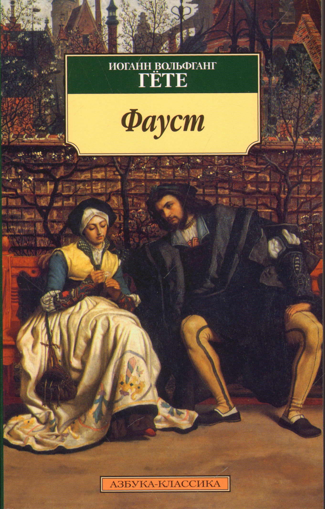

"Фауст" Й.Гете
Трагедія Гете "Фауст" починається з конфлікту: злі і добрі сили сперечаються, кому саме дістанеться душа вченого Фауста. У той час, як вищі сили ведуть такі дискусії, сам Фауст знаходиться на межі, обираючи між життям і смертю. Він розуміє, що прожив нікчемне життя, у якому було місце для науки, книг, вирішення важких питань, проте не знайшлося часу для найголовнішого: для створення родини і для продовження свого роду. Фауст вважає, що життя більш не має ніякого сенсу і вже ладен випити отруту, проте з'являється диявол Мефістофель і змушує його зупинитися, обіцяючи відкрити перед вченим усі таємниці Всесвіту.